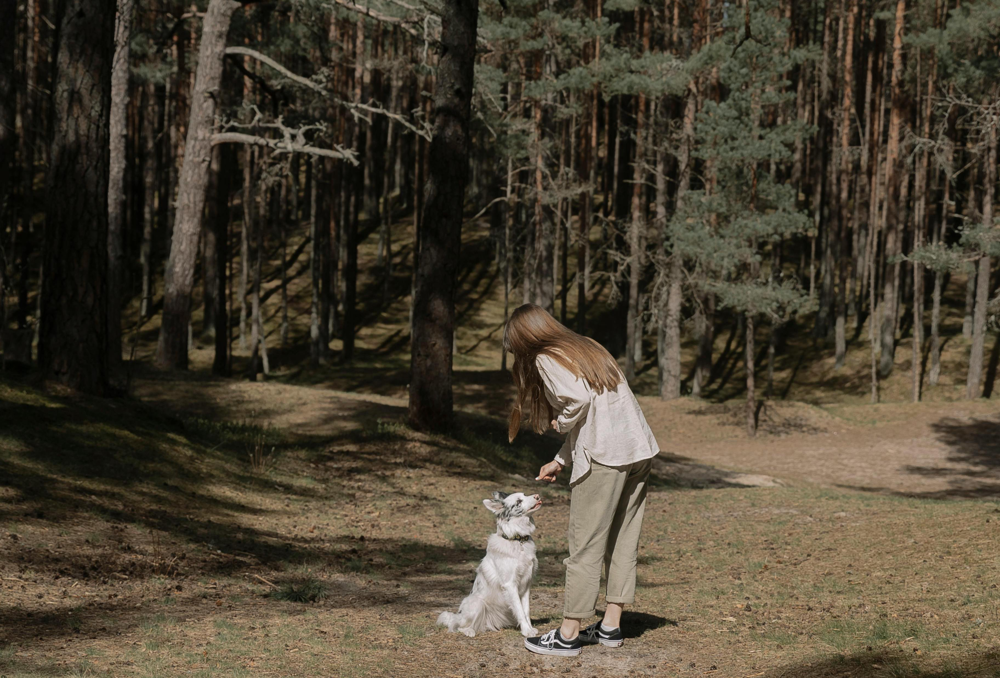
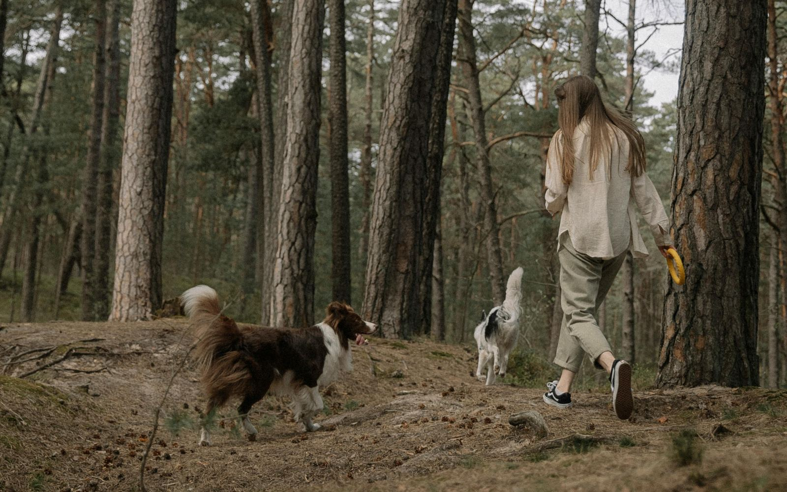
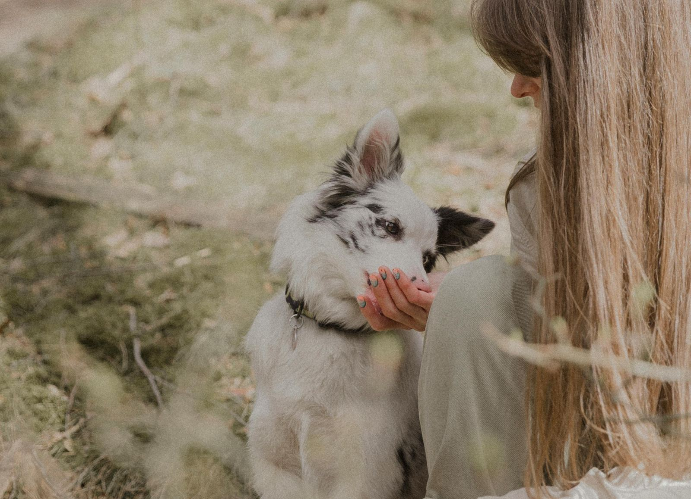

There's a particular kind of love that asks for nothing in return. That shows up the same way on a Tuesday morning as it does after the worst day of your life. That doesn't tire of you, doesn't need you to be anything other than exactly who you are, and greets every single version of you — the anxious one, the sad one, the one who hasn't left the house in three days — with the same unbothered, unshakeable devotion.
Most of us spend years searching for that kind of love in human relationships. And then we look down at the dog sitting at our feet, who has been offering it all along.

The relationship that never asks you to be more than you are.
The Love That Doesn't Keep Score
Researchers from Eötvös Loránd University and Arizona State University found that dog owners frequently report more consistent emotional fulfillment from their pets than from their human relationships. That finding might feel surprising at first — or slightly uncomfortable — until you sit with it. Because if you have a dog, you already know it's true.
Human love, as beautiful as it is, comes with complexity. History. Expectations. The subtle weight of being known by someone who can also be disappointed in you. A dog carries none of that. Their love has no conditions attached, no fine print, no expiry date tied to your behavior. Psychologists describe this as non-judgmental companionship — and it turns out the body responds to it in measurable, significant ways: lower anxiety, increased positive affect, and a stronger sense of self-worth, simply from being in their presence.
A dog doesn't love you because of what you achieve or how you show up. They love you because you're you — and that, it turns out, is exactly what most of us need most.
Your Dog Is Teaching You to Be Present
Dogs live entirely in the now. They are not thinking about what happened yesterday or worrying about tomorrow. When they eat, they eat with full attention. When they walk, they are wholly absorbed in every smell, every blade of grass, every small discovery. When they rest beside you, they are simply resting — not planning, not replaying, not spinning.
What looks like simplicity is actually a masterclass in mindfulness. And it's one they give you for free, every single day, just by being who they are. Research shows that time spent with dogs actively helps humans break negative thought loops — that particular kind of spiral where your mind keeps returning to the same worry, the same regret, the same "what if" on repeat. A dog, demanding a walk or a game or simply your hand on their head, pulls you back into the present with a gentleness that no meditation app has quite replicated.

Every walk is a lesson in paying attention to the world right in front of you.
What Happens in Your Body When You're With Them
The bond between a dog and their person isn't just emotional — it's physiological. Studies have shown that interacting with dogs lowers cortisol levels, the hormone most associated with stress, while raising oxytocin — the same bonding hormone released between mothers and newborns, between people who are falling in love. Your nervous system, quite literally, softens.
Perhaps most beautifully: research from Harvard has found that dogs and their owners can develop mirrored heart rate variability — a shared, synchronized calm that happens when two beings who trust each other are simply in the same space. You slow down together. You breathe together. The body doesn't distinguish between a human presence and a dog's — it only recognizes safety, and it relaxes accordingly.
The research: Studies from the NIH, Harvard Medical School, and the Mayo Clinic Health System have all documented significant health benefits of dog companionship — including reduced blood pressure, lower stress hormones, decreased feelings of loneliness, and improved cardiovascular outcomes. The American Psychological Association notes that strong pet bonds are linked to higher empathy and better communication in human relationships too.
They Make You Better at Loving People, Too
Here's something quietly remarkable: people with strong bonds to their dogs often develop higher empathy, deeper compassion, and better communication skills in their human relationships. The practice of loving something that cannot explain its needs in words — learning to read body language, to notice subtle shifts in mood, to simply be attuned — turns out to be excellent training for intimacy of all kinds.
Your dog is teaching you, without ever meaning to, how to pay attention. How to be patient with a creature that communicates differently than you do. How to show up for someone even when there's nothing to say.
The Dog Who Opens Your World
And then there's what they do for your life beyond the walls of your home. Dogs are, without trying to be, social architects. A walk with a dog is a completely different experience from a walk alone — eyes meet yours, strangers stop, conversations start that would never have started otherwise. The park becomes a community. The neighbourhood becomes familiar. You become, through them, someone who is easier to approach.
For anyone who has ever felt lonely — and most of us have, in ways we don't always name — a dog quietly, consistently bridges that gap. They give you a reason to leave the house. A rhythm to your day. A living being whose entire world, for that morning walk, is you.

Every walk is a small act of showing up for the world — and for yourself.
The relationship that was always right there.
We spend so much energy tending to our human relationships — and rightly so. But sometimes the most nourishing relationship in our life is the one curled up at the end of the bed, asking for nothing more than your presence. If you have a dog, you have something rare: a love that is unconditional, consistent, and completely without agenda. That is not a small thing. That is, by any real measure, an extraordinary thing. Let yourself receive it fully.
有些爱不是“互动”，而是“存在”
有一种关系，其实一直都在那里陪伴着。我们花很多时间去维系人与人之间的连接， 这是必要的，也很珍贵。但有时候，最安静、最能滋养我们的关系，是那个蜷在沙发一角的小生命。 它不要求你解释什么，也不要求你回报什么。它只是希望你在。如果你有一个毛孩子， 你就拥有了一份专属而且很特别的爱。稳定、持续、没有条件，也没有目的。 它不会计算，也不会离开。这并不是一件小事。恰恰相反，它是一种非常稀有的幸福。 所以，请允许自己，真正地接住它，珍惜这份狗狗给予你的爱。